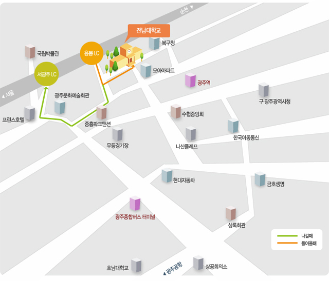
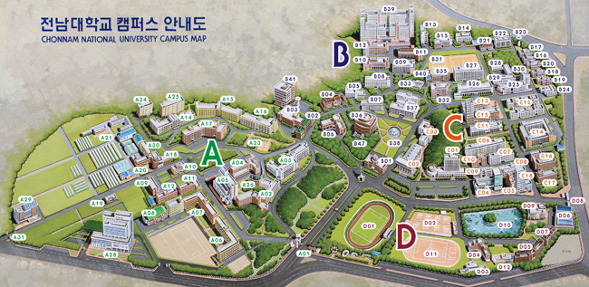
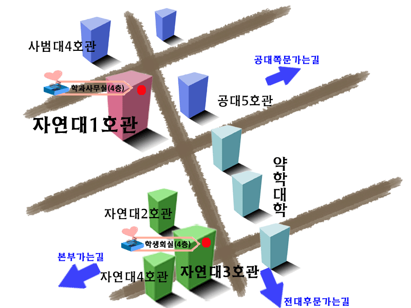

Travel Information
- For English version, please go to University Cyber Campus Tour webpage.
- The workshop will be held in Room 406, College of Natural Science Building I.
- 전남대학교 찾아오시는 길

- 승용차편: 호남고속도로를 이용하여 서광주와 동광주IC사이에 있는 용봉IC로 빠져 나옴.
용봉IC에서 용봉캠퍼스까지 약 10분소요.
용봉IC는 출구만 있고, 입구는 없기 때문에 고속도로를 타기 위해 전남대 정문에서 신안3거리를 지나 운감고가 밑에서 우회전하여 광주문화예술회관으로 나간 뒤 서광주IC를 통해 고속도로로 나간다.
- 항공편: 광주공항에서 용봉캠퍼스까지 택시로 약 30분 소요
- 철도편: 광주역에서 용봉캠퍼스까지 택시로 5분 거리
- 고속버스/시외버스편: 광천동 터미널에서 용봉캠퍼스까지 택시로 약 15분정도 소요
- 시내버스(전남대 후문): 진월07, 문흥18, 일곡180, 용전184, 송정19, 일곡28, 일곡38, 금남56, 문흥80, 용봉83, 충효187
- 전남대학교 캠퍼스 안내도

- 수학과 위치: 전남대학교 후문쪽으로 오시면 가깝습니다.
